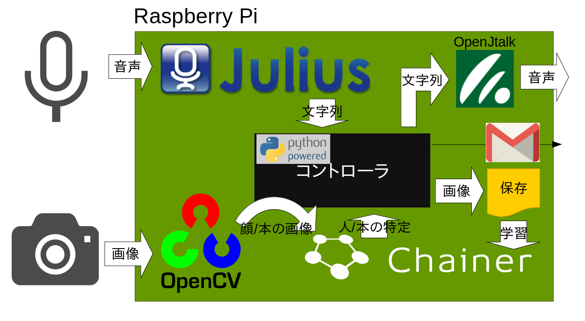

MultiprocessIteratorで
爆速学習しよう
自己紹介
-
仕事
- ECサイト、ニュース、ポータルなどの全文検索
- 画像や文章からの自動タグ付けにchainerを使用
-
趣味
- Raspberry Piでなんか作る
- Raspberry Piでの画像処理にchainerを使用
Chainer使用例1: 図書館司書
図書館司書の中身
OSSを駆使して全部Raspberry Pi上で処理

Chainer使用例2: 物体検出
赤=乗り物,
緑=動物,
青=人
物体検出の動作環境
撮影・検出・描画は全てRaspberry Pi

例3: WebDNNのモデル作成
赤=乗り物,
緑=動物,
青=人
- 極小リソースでCNNを動かしたい
- モデル自体を小さく軽く作る
- 軽量モデルの学習時に起きること。それは
前処理がボトルネックになる問題
前処理?
教師データとして画像を扱う際、わざとノイズを加えてモデルの汎化性能向上を狙うの、よくやりますよね左右反転
ランダム切り抜き
ランダム回転

ざらざらノイズ


色のバランス変更
...全部!!
前処理ボトルネック
- 様々な前処理を重ねるとそれなりに時間を消費
- 用意できる教師データが少なくなる
- GPUは大量に学習できる計算力がある
- GPUとCPUのほとんどのcoreを余らせる状態に
前処理ボトルネック
Pascal VOC学習中のGPU
Urban Object Detection学習中のGPU
この問題を解決するのが
MultiprocessIterator
MultiprocessIterator
- ChainerのMNISTチュートリアルに登場するSerialIteratorと差し替えて使える
- n_jobsで指定した数だけworkerプロセスを起動し、並列でデータを準備してくれる
効果: GPU使用率up
Pascal VOC学習中(n_jobs=5)
Urban Object Detection学習中(n_jobs=8)
効果: 学習速度up
注意点
当然CPUのCore数が要求されます
注意点
データを逐次ディスクから読み出す場合、
ディスクの読み出し速度も要求されます
ディスクの読み出し速度も要求されます